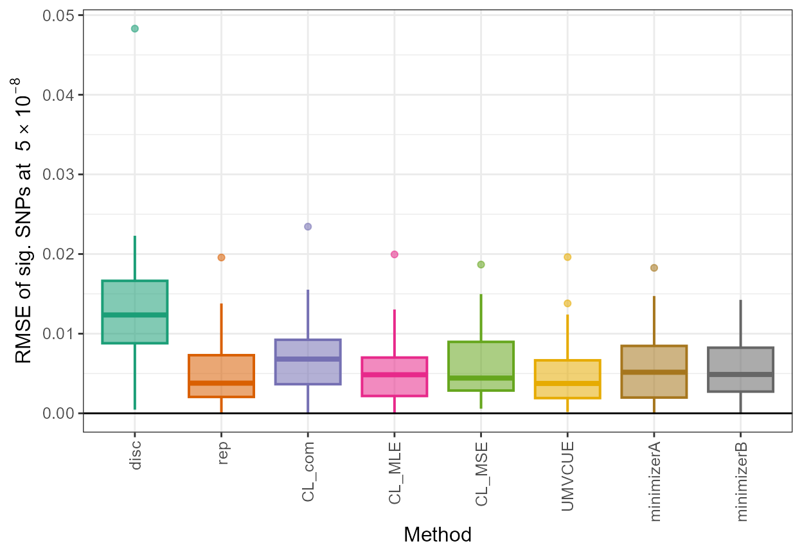
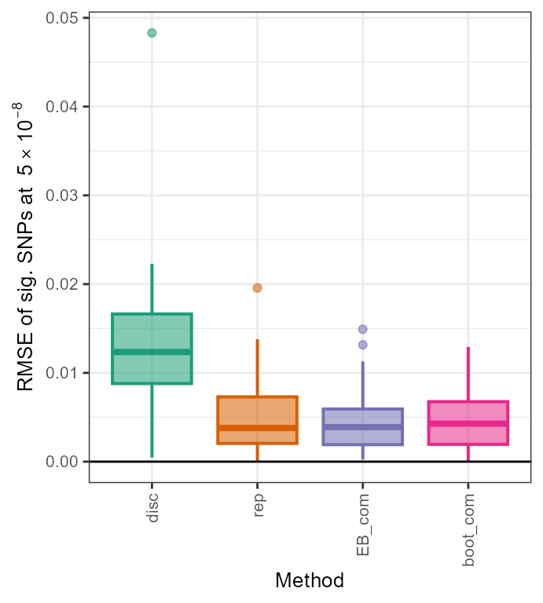
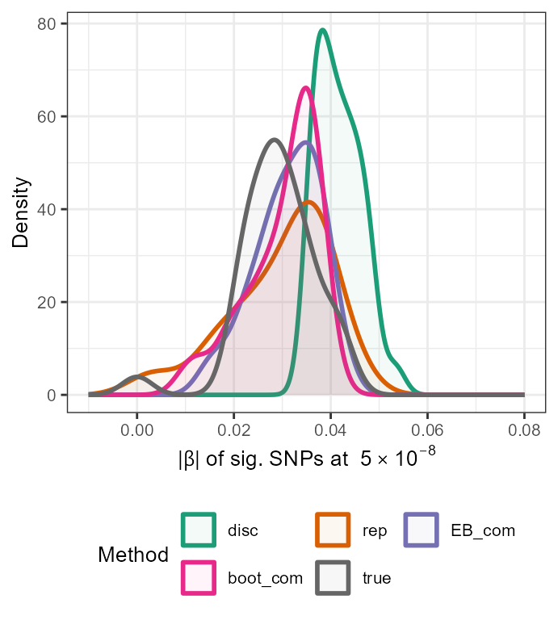

discovery_replication.RmdOur R package, winnerscurse, also contains several
functions which have the ability to obtain more accurate SNP-trait
association estimates when the summary statistics from two genetic
association studies, namely the discovery and replication GWASs, are
available. Thus, this second vignette demonstrates how the package can
be used to obtain new adjusted association estimates for each SNP using
these two data sets. Similar to the first
vignette which focused on ‘discovery only’ methods, we
first use the function sim_stats to create two toy data
sets and then, illustrate how a user may employ the package’s functions
to adjust for the bias imposed by winner’s curse.
The methods that are currently available for implementation include:
It is important to note that with both of these methods, adjustments are only made to SNPs that are deemed significant in the discovery data set, i.e. the \(p\)-values in the discovery data set of these SNPs are less than that of the specified threshold, \(\alpha\).
A third method has also been added which obtains a new association estimate for each significant SNP in the discovery data set using a combination of the discovery and replication estimates:
The function sim_stats allows users to simulate two
data sets of GWAS summary statistics which are based on the same true
underlying SNP-trait association values. This provides users with
simulated discovery and replication GWAS summary statistics to which the
aforementioned correction methods can then be applied.
When considering obtaining a simulated set of summary statistics
for both discovery and replication GWASs, sim_stats
requires the user to specify six arguments, namely
nsnp, h2, prop_effect,
nid, rep and rep_nid. The first
four arguments are defined just as in the first vignette, while
rep and rep_nid are defined as
follows:
rep: a logical parameter, i.e. TRUE or
FALSE, which allows the user to specify if they wish to
simulate summary statistics for a replication GWAS as wellrep_nid: the number of samples in the replication
studyIn order to obtain summary statistics for a replication GWAS, the
user must change rep from its default setting of
rep=FALSE to rep=TRUE. It is noted that the
default value for rep_nid is rep_nid=50000.
Thus, if the default values are used in sim_stats for every
argument except rep, two sets of summary statistics will be
simulated for 1,000,000 independent SNPs in which 1% have a true effect
on this trait with moderate heritability and a total of 50,000
individuals have been sampled in both the discovery and replication
studies.
As mentioned in the first vignette, sim_stats
outputs a list with three components, true,
disc and rep. When both discovery and
replication GWASs are considered and the function parameter
rep has been set to TRUE, the third element of
this list will no longer be NULL. Instead, a data frame
with three columns is outputted. Similar to disc, for each
SNP, the rep data frame contains its ID number, its
estimated effect size obtained in this replication study and associated
standard error. We again note that this function outputs both sets of
summary statistics in a suitable way so that the winner’s curse
correction methods can be directly applied, i.e. in the form of a
data frame with three columns rsid,
beta and se.
set.seed(1998)
sim_dataset <- sim_stats(nsnp=10^6,h2=0.4,prop_effect=0.01,nid=50000,rep=TRUE,rep_nid=50000)
## simulated discovery GWAS summary statistics
disc_stats <- sim_dataset$disc
head(disc_stats)
#> rsid beta se
#> 1 1 -0.013919699 0.019222524
#> 2 2 0.003097741 0.009187098
#> 3 3 -0.037870279 0.016459187
#> 4 4 -0.011874324 0.019560506
#> 5 5 0.024414134 0.006334964
#> 6 6 -0.001690693 0.007697227
## simulated replication GWAS summary statistics
rep_stats <- sim_dataset$rep
head(rep_stats)
#> rsid beta se
#> 1 1 -0.022445150 0.019222524
#> 2 2 0.009001205 0.009187098
#> 3 3 -0.018269267 0.016459187
#> 4 4 -0.018674960 0.019560506
#> 5 5 0.031778103 0.006334964
#> 6 6 0.002267041 0.007697227The function condlike_rep implements a version of
the conditional likelihood method for obtaining bias-reduced association
estimates described in Zhong and
Prentice (2008).
The function requires as inputs two independent data sets, one
representing a discovery GWAS, summary_disc, and the other
a replication study with identical SNPs, summary_rep, as
well as a specification of the significance threshold,
alpha, to be used. As before, the data sets must be in the
form of data frames with columns rsid, beta
and se, all columns of the data frames must contain
numerical values and each row of both data frames must represent a
unique SNP, identified by rsid. SNPs must be in the exact
same order in both data sets, i.e. the identity
summary_rep$rsid == summary_disc$rsid must evaluate to
TRUE.
Furthermore, the parameter conf_interval in
condlike_rep provides the user with the option to obtain
confidence intervals for each of the adjusted association estimates. The
default setting is conf_interval=FALSE. Inserting
conf_interval=TRUE when using the function will return
three sets of lower and upper confidence interval boundaries for each
SNP, each set corresponding to a particular form of adjusted estimate.
The final parameter conf_level takes a numerical value
between 0 and 1 which specifies the confidence interval, with the
default being 0.95.
In a similar manner to other functions included in the package,
condlike_rep returns a single data frame with SNPs
reordered based on significance. However, it only contains SNPs which
have been deemed significant in the discovery data set. The first 5
columns of the data frame details the inputted information;
rsid, beta_disc, se_disc,
beta_rep, se_rep. Following this,
beta_com is the inverse variance weighted estimate which is
formally defined as:\[\hat\beta_{\text{com}}
= \frac{\sigma_2^2 \hat\beta_1 + \sigma_1^2 \hat\beta_2}{\sigma_1^2 +
\sigma_2^2},\] in which \(\hat\beta_1\) = beta_disc,
\(\hat\beta_2\) =
beta_rep, \(\sigma_1\) =
se_disc and \(\sigma_2\) =
se_rep.
The method implemented here uses just one selection cut-point at
the first discovery stage as opposed to that described in Zhong and
Prentice (2008) in which two separate selection thresholds are used.
Thus, the maximum likelihood adjusted estimator, beta_MLE
is defined to maximize the conditional likelihood at the observed \(\hat\beta_{\text{com}}\):\[\hat\beta_{\text{MLE}} = \arg \max_{\beta} \log
f(\hat\beta_{\text{com}}; \beta).\] The conditional sampling
distribution, \(f(x;\beta)\) is
approximated by: \[f(x;\beta) =
\frac{\frac{1}{\sigma_{\text{com}}}
\phi\left(\frac{x-\beta}{\sigma_{\text{com}}}\right) \cdot
\left[\Phi\left(\frac{x-c\sigma_1}{\frac{\sigma_1}{\sigma_2}\sigma_{\text{com}}}\right)
+
\Phi\left(\frac{-x-c\sigma_1}{\frac{\sigma_1}{\sigma_2}\sigma_{\text{com}}}\right)\right]}{\Phi\left(\frac{\beta}{\sigma_1}
- c\right) + \Phi\left(- \frac{\beta}{\sigma_1} -
c\right)}.\]
\(c\) is the selection
cut-point, i.e. all SNPs with \(\mid
\frac{\hat\beta_1}{\sigma_1}\mid \ge c\) are deemed as
significant. The value of \(c\) is
easily obtained using the chosen alpha. In addition, \[\sigma^2_{\text{com}} = \frac{\sigma_1^2
\sigma_2^2}{\sigma_1^2 + \sigma_2^2}.\]
Note that this function, \(f(x;\beta)\) is slightly different from that given in the paper as only one selection cut-point is imposed here.
Finally, Zhong and Prentice (2008) noted that simulation studies showed that \(\hat\beta_{\text{com}}\) tended to have upward bias while \(\hat\beta_{\text{MLE}}\) over-corrected and therefore, a combination of the two in the following form was proposed: \[\hat\beta_{\text{MSE}} = \frac{\hat\sigma^2_{\text{com}}\cdot \hat\beta_{\text{com}} + (\hat\beta_{\text{com}} - \hat\beta_{\text{MLE}})^2\cdot\hat\beta_{\text{MLE}}}{\sigma^2_{\text{com}}+(\hat\beta_{\text{com}} - \hat\beta_{\text{MLE}})^2}.\] This \(\hat\beta_{\text{MSE}}\) holds the final column of the outputted data frame in the default setting.
The use of condlike_rep with our toy data sets in
which conf_interval=FALSE is demonstrated below, with a
significance threshold value of 5e-8:
out_CL <- condlike_rep(summary_disc=disc_stats, summary_rep=rep_stats, alpha=5e-8)
head(out_CL)
#> rsid beta_disc se_disc beta_rep se_rep beta_com beta_MLE
#> 1 3965 0.05013020 0.006345754 0.04754268 0.006345754 0.04883644 0.04874015
#> 2 7815 0.05040019 0.006567997 0.03849648 0.006567997 0.04444834 0.04374594
#> 3 4998 -0.04856148 0.006458450 -0.04232183 0.006458450 -0.04544166 -0.04501175
#> 4 7261 0.04649358 0.006342549 0.04167160 0.006342549 0.04408259 0.04358624
#> 5 6510 0.04611661 0.006499584 0.04135877 0.006499584 0.04373769 0.04299534
#> 6 9917 0.04489474 0.006333883 0.04504234 0.006333883 0.04496854 0.04459625
#> beta_MSE
#> 1 0.04883640
#> 2 0.04443263
#> 3 -0.04543788
#> 4 0.04407658
#> 5 0.04371881
#> 6 0.04496598\(~\)
Confidence intervals:
Firstly, the \((1-\alpha)\%\) confidence interval for \(\hat\beta_{\text{com}}\) is simply calculated as: \[\hat\beta_{\text{com}} \pm \hat\sigma_{\text{com}}Z_{1-\frac{\alpha}{2}}.\]For \(\hat\beta_{\text{MLE}}\), the profile confidence limits are the intersection of the log-likelihood curve with a horizontal line \(\frac{\chi^2_{1,1-\alpha}}{2}\) units below its maximum. The MSE weighting method, as described above, can then be easily applied to the upper and lower boundaries of these two confidence intervals to obtain an appropriate confidence interval for \(\hat\beta_{\text{MSE}}\). This gives: \[\hat\beta_{\text{MSE};\frac{\alpha}{2}} = \hat{K}_{\frac{\alpha}{2}} \hat\beta_{\text{com};\frac{\alpha}{2}} + \left(1-\hat{K}_{\frac{\alpha}{2}}\right) \hat\beta_{\text{MLE};\frac{\alpha}{2}}\] \[\hat\beta_{\text{MSE};1-\frac{\alpha}{2}} = \hat{K}_{1-\frac{\alpha}{2}} \hat\beta_{\text{com};1-\frac{\alpha}{2}} + \left(1-\hat{K}_{1-\frac{\alpha}{2}}\right) \hat\beta_{\text{MLE};1-\frac{\alpha}{2}}\] in which \(\hat{K}_{\frac{\alpha}{2}} = \frac{\hat\sigma^2_{\text{com}}}{\hat\sigma^2_{\text{com}} + \left(\hat\beta_{\text{com};\frac{\alpha}{2}} - \hat\beta_{\text{MLE};\frac{\alpha}{2}}\right)^2} \;\) and \(\; \hat{K}_{1-\frac{\alpha}{2}} = \frac{\hat\sigma^2_{\text{com}}}{\hat\sigma^2_{\text{com}} + \left(\hat\beta_{\text{com};1-\frac{\alpha}{2}} - \hat\beta_{\text{MLE};1-\frac{\alpha}{2}}\right)^2}.\)
We implement condlike_rep on our toy data sets with
conf_interval now set to TRUE to show the form
in which the output now takes. A similar data frame to that above is
returned with 95% confidence intervals also included for each adjusted
association estimate for each SNP.
out_CL_conf <- condlike_rep(summary_disc=disc_stats, summary_rep=rep_stats, alpha=5e-8, conf_interval=TRUE, conf_level=0.95)
head(out_CL_conf)
#> rsid beta_disc se_disc beta_rep se_rep beta_com
#> 1 3965 0.05013020 0.006345754 0.04754268 0.006345754 0.04883644
#> 2 7815 0.05040019 0.006567997 0.03849648 0.006567997 0.04444834
#> 3 4998 -0.04856148 0.006458450 -0.04232183 0.006458450 -0.04544166
#> 4 7261 0.04649358 0.006342549 0.04167160 0.006342549 0.04408259
#> 5 6510 0.04611661 0.006499584 0.04135877 0.006499584 0.04373769
#> 6 9917 0.04489474 0.006333883 0.04504234 0.006333883 0.04496854
#> beta_com_lower beta_com_upper beta_MLE beta_MLE_lower beta_MLE_upper
#> 1 0.04004184 0.05763104 0.04874015 0.03952870 0.05760615
#> 2 0.03534572 0.05355095 0.04374594 0.03337042 0.05330180
#> 3 -0.05439245 -0.03649087 -0.04501175 -0.05425351 -0.03510238
#> 4 0.03529243 0.05287275 0.04358624 0.03377022 0.05270884
#> 5 0.03472989 0.05274549 0.04299534 0.03268562 0.05247975
#> 6 0.03619038 0.05374669 0.04459625 0.03493974 0.05362905
#> beta_MSE beta_MSE_lower beta_MSE_upper
#> 1 0.04883640 0.04003521 0.05763104
#> 2 0.04443263 0.03504314 0.05355023
#> 3 -0.04543788 -0.05439232 -0.03637338
#> 4 0.04407658 0.03513518 0.05287253
#> 5 0.04371881 0.03439224 0.05274460
#> 6 0.04496598 0.03609992 0.05374661\(\star\) Note: As
the current form of condlike_rep uses the R function
uniroot which aims to find values for
beta_MLE_lower and beta_MLE_upper numerically,
it is possible that uniroot may fail to successfully
achieve this in some situations. We thus urge users to take care when
using condlike_rep to obtain confidence intervals and to be
mindful of this potential failure of uniroot.
The implementation of UMVCUE is very similar to the
function described above in the sense that UMVCUE requires
the same inputs; discovery and replication data sets in the form of
three-columned data frames together with a threshold value,
alpha. Furthermore, the outputted data frame is in the same
form with just one extra column providing the adjusted estimate,
beta_UMVCUE.
Selection also occurs here at just one stage as SNPs are deemed as significant if their \(p\)-values corresponding to \(\mid \frac{\hat\beta_1}{\sigma_1}\mid\) are smaller than the given threshold.
The function UMVCUE executes the method detailed in
Bowden
and Dudbridge (2009). No adaptations have been made to the method
described.
It is worth noting that, as with all conditional likelihood
methods, the method used in condlike_rep makes adjustments
to each SNP one at a time with no information relating to other SNPs
required for this adjustment. However, after ordering SNPs based on
significance, for a single SNP, UMVCUE also uses the data
of SNPs on either side of it to assist with the adjustment.
UMVCUE can be applied to the toy data sets as
followed, with alpha again specified as
5e-8:
out_UMVCUE <- UMVCUE(summary_disc = disc_stats, summary_rep = rep_stats, alpha = 5e-8)
head(out_UMVCUE)
#> rsid beta_disc se_disc beta_rep se_rep beta_UMVCUE
#> 1 3965 0.05013020 0.006345754 0.04754268 0.006345754 0.04534592
#> 2 7815 0.05040019 0.006567997 0.03849648 0.006567997 0.03840796
#> 3 4998 -0.04856148 0.006458450 -0.04232183 0.006458450 -0.04249046
#> 4 7261 0.04649358 0.006342549 0.04167160 0.006342549 0.04188581
#> 5 6510 0.04611661 0.006499584 0.04135877 0.006499584 0.04064881
#> 6 9917 0.04489474 0.006333883 0.04504234 0.006333883 0.04545721The function MSE_minimizer implements a combination
method which closely follows that described in Ferguson et
al. (2017). The function parameters used here;
summary_disc, summary_rep and
alpha, are precisely of the same form as those previously
detailed in this vignette. In addition, MSE_minimizer has a
logical parameter, namely spline which defaults as
spline=TRUE. As a smoothing spline is used in the execution
of this function, data corresponding to at least 5 SNPs is
required.
An adjusted estimate is computed for each SNP which has been
classified as significant in the discovery data set, based on the given
threshold. Thus, similar to the above method, MSE_minimizer
returns a data frame containing these significant SNPs with 6 columns in
which the final column contains the new estimate,
beta_joint.
Following the approach detailed in Ferguson et
al. (2017), we define the adjusted linear combination estimator
as: \[\hat\beta_{\text{joint}} =
\omega(\hat{B}) \cdot \hat\beta_{\text{rep}} + (1-\omega(\hat{B}))\cdot
\hat\beta_{\text{disc}}\] in which \[
\omega(\hat{B}) =
\frac{\frac{1}{\sigma^2_{\text{rep}}}}{\frac{1}{\sigma^2_{\text{rep}}}+\frac{1}{\sigma^2_{\text{disc}}+
\hat{B}^2}}.\] When spline=FALSE is used, we simply
let \(\hat{B} = \hat\beta_{\text{disc}} -
\hat\beta_{\text{rep}}\). We make the assumptions that \(\beta_{\text{rep}}\) is unbiased for \(\beta\), but \(\beta_{\text{disc}}\) is quite likely to be
biased and that \(\beta_{\text{rep}}\)
and \(\beta_{\text{disc}}\) are
independent.
For the default setting spline=TRUE, a cubic
smoothing spline is applied in which the values of \(z_{\text{disc}} =
\frac{\hat\beta_{\text{disc}}}{\sigma_{\text{disc}}}\) are
considered as inputs and \(\hat{B} =
\hat\beta_{\text{disc}} - \hat\beta_{\text{rep}}\), the
corresponding outputs. The predicted values for \(\hat{B}\) from this process, \(\hat{B}^*\) say, are then used instead of
\(\hat{B}\) when computing \(\hat\beta_{\text{joint}}\) for each
SNP.
We apply MSE_minimizer to our toy data sets, once
with the default setting for spline and once with
spline=FALSE. Again for convenient demonstration purposes,
we specify the significance threshold as 5e-8.
out_minimizerA <- MSE_minimizer(summary_disc = disc_stats, summary_rep = rep_stats, alpha=5e-8, spline=FALSE)
out_minimizerB <- MSE_minimizer(summary_disc = disc_stats, summary_rep = rep_stats, alpha=5e-8)
head(out_minimizerA)
#> rsid beta_disc se_disc beta_rep se_rep beta_joint
#> 1 3965 0.05013020 0.006345754 0.04754268 0.006345754 0.04873714
#> 2 7815 0.05040019 0.006567997 0.03849648 0.006567997 0.04074896
#> 3 4998 -0.04856148 0.006458450 -0.04232183 0.006458450 -0.04444894
#> 4 7261 0.04649358 0.006342549 0.04167160 0.006342549 0.04354204
#> 5 6510 0.04611661 0.006499584 0.04135877 0.006499584 0.04323500
#> 6 9917 0.04489474 0.006333883 0.04504234 0.006333883 0.04496856
head(out_minimizerB)
#> rsid beta_disc se_disc beta_rep se_rep beta_joint
#> 1 3965 0.05013020 0.006345754 0.04754268 0.006345754 0.04798402
#> 2 7815 0.05040019 0.006567997 0.03849648 0.006567997 0.04143473
#> 3 4998 -0.04856148 0.006458450 -0.04232183 0.006458450 -0.04280239
#> 4 7261 0.04649358 0.006342549 0.04167160 0.006342549 0.04330376
#> 5 6510 0.04611661 0.006499584 0.04135877 0.006499584 0.04321159
#> 6 9917 0.04489474 0.006333883 0.04504234 0.006333883 0.04498537Just as in the first vignette, we can briefly compare the performance
of our correct methods using measures such as the estimated root mean
square error of significant SNPs (rmse) and the estimated
average bias over all significant SNPs (bias). The
significant SNPs we refer to here are those that have been deemed
significant at a threshold of \(\alpha=5
\times 10^{-8}\) in the discovery GWAS.
## Simulated true effect sizes:
true_beta <- sim_dataset$true$true_betaThe estimated root mean square error of significant SNPs for each method is computed below. It is clear that all methods show an improvement on the estimates obtained from the discovery data set. However, certain further investigation will be required in order to evaluate if the adjusted estimates are less biased or more accurate than the mere use of replication estimates.
## rmse
rmse <- data.frame(disc = sqrt(mean((out_CL$beta_disc - true_beta[out_CL$rsid])^2)), rep = sqrt(mean((out_CL$beta_rep - true_beta[out_CL$rsid])^2)), CL_com = sqrt(mean((out_CL$beta_com - true_beta[out_CL$rsid])^2)), CL_MLE = sqrt(mean((out_CL$beta_MLE - true_beta[out_CL$rsid])^2)), CL_MSE = sqrt(mean((out_CL$beta_MSE - true_beta[out_CL$rsid])^2)), UMVCUE = sqrt(mean((out_UMVCUE$beta_UMVCUE - true_beta[out_UMVCUE$rsid])^2)), minimizerA = sqrt(mean((out_minimizerA$beta_joint - true_beta[out_minimizerA$rsid])^2)), minimizerB = sqrt(mean((out_minimizerB$beta_joint - true_beta[out_minimizerB$rsid])^2)))
rmse
#> disc rep CL_com CL_MLE CL_MSE UMVCUE
#> 1 0.01486281 0.006825705 0.008522003 0.006602122 0.006913343 0.006745814
#> minimizerA minimizerB
#> 1 0.006911017 0.007335226The next metric, the average bias over all significant SNPs with positive association estimates, is included below.
## bias positive
pos_sig <- out_CL$rsid[out_CL$beta_disc > 0]
pos_sigA <- which(out_CL$rsid %in% pos_sig)
bias_up <- data.frame(disc = mean(out_CL$beta_disc[pos_sigA] - true_beta[pos_sig]), rep = mean(out_CL$beta_rep[pos_sigA] - true_beta[pos_sig]), CL_com = mean(out_CL$beta_com[pos_sigA] - true_beta[pos_sig]), CL_MLE = mean(out_CL$beta_MLE[pos_sigA] - true_beta[pos_sig]), CL_MSE = mean(out_CL$beta_MSE[pos_sigA] - true_beta[pos_sig]), UMVCUE = mean(out_UMVCUE$beta_UMVCUE[pos_sigA] - true_beta[pos_sig]), minimizerA = mean(out_minimizerA$beta_joint[pos_sigA] - true_beta[pos_sig]), minimizerB = mean(out_minimizerB$beta_joint[pos_sigA] - true_beta[pos_sig]))
bias_up
#> disc rep CL_com CL_MLE CL_MSE UMVCUE
#> 1 0.0126302 -0.0004286069 0.006100796 0.0006417358 0.001949358 -0.000652057
#> minimizerA minimizerB
#> 1 0.001104282 0.003867762In a similar manner, the average bias over all significant SNPs with negative association estimates, is computed.
## bias negative
neg_sig <- out_CL$rsid[out_CL$beta_disc < 0]
neg_sigA <- which(out_CL$rsid %in% neg_sig)
bias_down <- data.frame(disc = mean(out_CL$beta_disc[neg_sigA] - true_beta[neg_sig]), rep = mean(out_CL$beta_rep[neg_sigA] - true_beta[neg_sig]), CL_com = mean(out_CL$beta_com[neg_sigA] - true_beta[neg_sig]), CL_MLE = mean(out_CL$beta_MLE[neg_sigA] - true_beta[neg_sig]), CL_MSE = mean(out_CL$beta_MSE[neg_sigA] - true_beta[neg_sig]), UMVCUE = mean(out_UMVCUE$beta_UMVCUE[neg_sigA] - true_beta[neg_sig]), minimizerA = mean(out_minimizerA$beta_joint[neg_sigA] - true_beta[neg_sig]), minimizerB = mean(out_minimizerB$beta_joint[neg_sigA] - true_beta[neg_sig]))
bias_down
#> disc rep CL_com CL_MLE CL_MSE UMVCUE
#> 1 -0.01172448 -0.001100763 -0.006412624 -0.001322764 -0.003147114 -0.001036073
#> minimizerA minimizerB
#> 1 -0.002856657 -0.005493027To complement the above, we provide an illustration of boxplots obtained for the root mean square error of significant SNPs (RMSE of sig. SNPs at \(5 \times 10^{-8}\)), plotted for each winner’s curse correction method (Method).
library(RColorBrewer)
library(ggplot2)
col <- brewer.pal(8,"Dark2")
col1 <- brewer.pal(11,"RdYlBu")
all_results <- data.frame(rsid = c(rep(out_CL$rsid,8)), beta_disc = c(rep(out_CL$beta_disc,8)), se_disc = c(rep(out_CL$se_disc,8)), adj_beta = c(out_CL$beta_disc,out_CL$beta_rep,out_CL$beta_com,out_CL$beta_MLE,out_CL$beta_MSE,out_UMVCUE$beta_UMVCUE,out_minimizerA$beta_joint,out_minimizerB$beta_joint), method = c(rep("disc",34),rep("rep",34),rep("CL_com",34),rep("CL_MLE",34),rep("CL_MSE",34),rep("UMVCUE",34),rep("minimizerA",34),rep("minimizerB",34)))
all_results$rmse <- sqrt((all_results$adj_beta - true_beta[all_results$rsid])^2)
all_results$method <- factor(all_results$method, levels=c("disc","rep","CL_com", "CL_MLE", "CL_MSE", "UMVCUE", "minimizerA", "minimizerB"))
ggplot(all_results,aes(x=method,y=rmse,fill=method, color=method)) + geom_boxplot(size=0.7,aes(fill=method, color=method, alpha=0.2)) + scale_fill_manual(values=c(col[1],col[2],col[3],col[4],col[5],col[6],col[7],col[8])) + scale_color_manual(values=c(col[1],col[2],col[3],col[4],col[5],col[6],col[7],col[8])) + xlab("Method") +
ylab(expression(paste("RMSE of sig. SNPs at ", 5%*%10^-8))) + theme_bw() + geom_hline(yintercept=0, colour="black") + theme(axis.text.x=element_text(angle=90, vjust=0.5, hjust=1),text = element_text(size=12),legend.position = "none", strip.text = element_text(face="italic")) 
In addition, we can gain a visual insight into the adjustments made by these functions by constructing a density plot with the adjusted absolute values along with the naive estimates and the true absolute \(\beta\) values of significant SNPs, as follows:
true <- data.frame(rsid = c(out_CL$rsid), beta_disc =c(out_CL$beta_disc), se_disc =c(out_CL$se_disc),adj_beta=true_beta[out_CL$rsid],method=c(rep("true",34)))
all_resultsA <- rbind(all_results[,1:5],true)
ggplot(all_resultsA, aes(x=abs(adj_beta),colour=method,fill=method)) + geom_density(alpha=0.05,size=1) + scale_fill_manual(values=c(col[1],col[2],col[3],col[4],col[5],col[6],col[7],col[8],col1[11])) + scale_color_manual(values=c(col[1],col[2],col[3],col[4],col[5],col[6],col[7],col[8],col1[11])) + xlim(-0.01,0.08) +
ylab("Density") + xlab(expression(paste("|", beta, "| " , "of sig. SNPs at ", 5%*%10^-8))) + theme_bw() + theme(text = element_text(size=12)) + labs(fill = "Method",colour="Method")\(\star\) Note: In
the above plot, it can be seen that there must be very little difference
between the replication estimates and the adjusted estimates obtained
using the UMVCUE method as the density curves of rep and
UMVCUE can be seen to nearly overlap completely.
\(~\) \(~\)
When a replication data set is also available, as has been described
throughout this vignette, we also potentially have the option to employ
the empirical Bayes and bootstrap methods. We have seen this work well
in simulations, especially in terms of reducing the mean square error
(MSE) and thus, consider exploration of their implementation in this
setting. With data in the form described above similar to
disc_stats and rep_stats, implementation of
both methods could take place on the combined estimator as shown
below:
## combined estimator:
com_stats <- data.frame(rsid = disc_stats$rsid, beta = ((((rep_stats$se)^2)*(disc_stats$beta))+(((disc_stats$se)^2)*(rep_stats$beta)))/(((disc_stats$se)^2) + ((rep_stats$se)^2)), se = sqrt((((disc_stats$se)^2)*((rep_stats$se)^2))/(((disc_stats$se)^2) + ((rep_stats$se)^2))))
## apply methods:
out_EB_com <- empirical_bayes(com_stats)
out_boot_com <- BR_ss(com_stats,seed_opt=TRUE,seed=2020)
## rearrange data frames with SNPs ordered 1,2,3..
out_EB_com <- dplyr::arrange(out_EB_com,out_EB_com$rsid)
out_boot_com <- dplyr::arrange(out_boot_com,out_boot_com$rsid)
out_EB_com <- data.frame(rsid = disc_stats$rsid, beta_disc = disc_stats$beta, se_disc = disc_stats$se, beta_rep =rep_stats$beta, se_rep = rep_stats$se, beta_EB=out_EB_com$beta_EB)
out_boot_com <- data.frame(rsid = disc_stats$rsid, beta_disc = disc_stats$beta, se_disc = disc_stats$se, beta_rep =rep_stats$beta, se_rep = rep_stats$se, beta_boot=out_boot_com$beta_BR_ss)
## reorder data frames based on significance in discovery data set:
out_EB_com <- dplyr::arrange(out_EB_com, dplyr::desc(abs(out_EB_com$beta_disc/out_EB_com$se_disc)))
out_EB_com <- out_EB_com[abs(out_EB_com$beta_disc/out_EB_com$se_disc) > stats::qnorm((5e-8)/2, lower.tail=FALSE),]
head(out_EB_com)
#> rsid beta_disc se_disc beta_rep se_rep beta_EB
#> 1 3965 0.05013020 0.006345754 0.04754268 0.006345754 0.04727749
#> 2 7815 0.05040019 0.006567997 0.03849648 0.006567997 0.04283479
#> 3 4998 -0.04856148 0.006458450 -0.04232183 0.006458450 -0.04185813
#> 4 7261 0.04649358 0.006342549 0.04167160 0.006342549 0.04252442
#> 5 6510 0.04611661 0.006499584 0.04135877 0.006499584 0.04214094
#> 6 9917 0.04489474 0.006333883 0.04504234 0.006333883 0.04341250
out_boot_com <- dplyr::arrange(out_boot_com, dplyr::desc(abs(out_boot_com$beta_disc/out_boot_com$se_disc)))
out_boot_com <- out_boot_com[abs(out_boot_com$beta_disc/out_boot_com$se_disc) > stats::qnorm((5e-8)/2, lower.tail=FALSE),]
head(out_boot_com)
#> rsid beta_disc se_disc beta_rep se_rep beta_boot
#> 1 3965 0.05013020 0.006345754 0.04754268 0.006345754 0.04053099
#> 2 7815 0.05040019 0.006567997 0.03849648 0.006567997 0.04091237
#> 3 4998 -0.04856148 0.006458450 -0.04232183 0.006458450 -0.03823213
#> 4 7261 0.04649358 0.006342549 0.04167160 0.006342549 0.04008263
#> 5 6510 0.04611661 0.006499584 0.04135877 0.006499584 0.04034247
#> 6 9917 0.04489474 0.006333883 0.04504234 0.006333883 0.04036936We now compute similar evaluation metrics to above and produce the two plots in order to demonstrate the performance of the above approaches.
## rmse
rmse <- data.frame(disc = sqrt(mean((out_CL$beta_disc - true_beta[out_CL$rsid])^2)), rep = sqrt(mean((out_CL$beta_rep - true_beta[out_CL$rsid])^2)), EB_com = sqrt(mean((out_EB_com$beta_EB - true_beta[out_CL$rsid])^2)), boot_com = sqrt(mean((out_boot_com$beta_boot - true_beta[out_CL$rsid])^2)))
rmse
#> disc rep EB_com boot_com
#> 1 0.01486281 0.006825705 0.005684833 0.005689593
## bias positive
bias_up <- data.frame(disc = mean(out_CL$beta_disc[pos_sigA] - true_beta[pos_sig]), rep = mean(out_CL$beta_rep[pos_sigA] - true_beta[pos_sig]), EB_com = mean(out_EB_com$beta_EB[pos_sigA] - true_beta[pos_sig]), boot_com = mean(out_boot_com$beta_boot[pos_sigA] - true_beta[pos_sig]))
bias_up
#> disc rep EB_com boot_com
#> 1 0.0126302 -0.0004286069 0.00253731 0.0006846572
## bias negative
bias_down <- data.frame(disc = mean(out_CL$beta_disc[neg_sigA] - true_beta[neg_sig]), rep = mean(out_CL$beta_rep[neg_sigA] - true_beta[neg_sig]), EB_com = mean(out_EB_com$beta_EB[neg_sigA] - true_beta[neg_sig]), boot_com = mean(out_boot_com$beta_boot[neg_sigA] - true_beta[neg_sig]))
bias_down
#> disc rep EB_com boot_com
#> 1 -0.01172448 -0.001100763 -0.0026626 -0.002291323
par(mfrow = c(2, 1))
all_results <- data.frame(rsid = c(rep(out_CL$rsid,4)), beta_disc = c(rep(out_CL$beta_disc,4)), se_disc = c(rep(out_CL$se_disc,4)), adj_beta = c(out_CL$beta_disc,out_CL$beta_rep,out_EB_com$beta_EB,out_boot_com$beta_boot), method = c(rep("disc",34),rep("rep",34),rep("EB_com",34),rep("boot_com",34)))
all_results$rmse <- sqrt((all_results$adj_beta - true_beta[all_results$rsid])^2)
all_results$method <- factor(all_results$method, levels=c("disc","rep","EB_com", "boot_com"))
ggplot(all_results,aes(x=method,y=rmse,fill=method, color=method)) + geom_boxplot(size=0.7,aes(fill=method, color=method, alpha=0.2)) + scale_fill_manual(values=c(col[1],col[2],col[3],col[4])) + scale_color_manual(values=c(col[1],col[2],col[3],col[4])) + xlab("Method") +
ylab(expression(paste("RMSE of sig. SNPs at ", 5%*%10^-8))) + theme_bw() + geom_hline(yintercept=0, colour="black") + theme(axis.text.x=element_text(angle=90, vjust=0.5, hjust=1),text = element_text(size=10),legend.position = "none", strip.text = element_text(face="italic"))
true <- data.frame(rsid = c(out_CL$rsid), beta_disc =c(out_CL$beta_disc), se_disc =c(out_CL$se_disc),adj_beta=true_beta[out_CL$rsid],method=c(rep("true",34)))
all_resultsA <- rbind(all_results[,1:5],true)
ggplot(all_resultsA, aes(x=abs(adj_beta),colour=method,fill=method)) + geom_density(alpha=0.05,size=1) + scale_fill_manual(values=c(col[1],col[2],col[3],col[4],col[8])) + scale_color_manual(values=c(col[1],col[2],col[3],col[4],col[8])) + xlim(-0.01,0.08) +
ylab("Density") + xlab(expression(paste("|", beta, "| " , "of sig. SNPs at ", 5%*%10^-8))) + theme_bw() + theme(text = element_text(size=10),legend.position="bottom") + labs(fill = "Method",colour="Method") +guides(fill=guide_legend(nrow=2,byrow=TRUE))